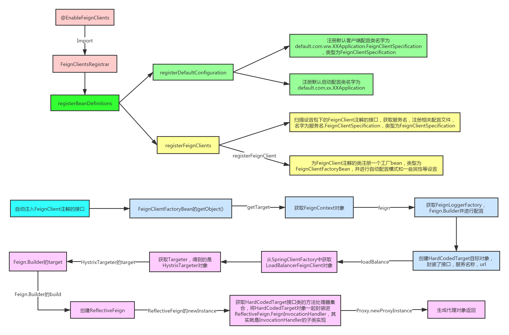
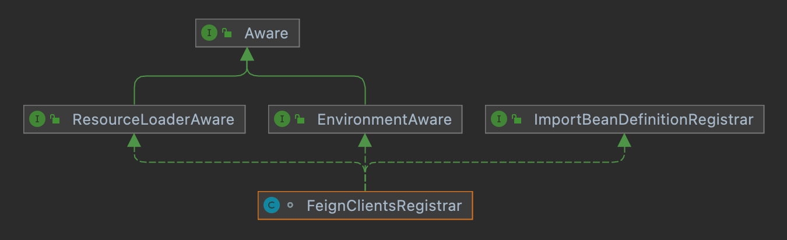

初始化流程

@EnableFeignClients，本身没做什么，只是有一些配置的属性，比如扫描包啊，设置配置文件啊，客户端啊，这个就不多说了，还是看这个上面的注解FeignClientsRegistrar：
x1(RetentionPolicy.RUNTIME)2(ElementType.TYPE)3// 导入的FeignClient5(FeignClientsRegistrar.class)6public @interface EnableFeignClients {7
8 /**9 * Alias for the {@link #basePackages()} attribute. Allows for more concise annotation10 * declarations e.g.: {@code @ComponentScan("org.my.pkg")} instead of11 * {@code @ComponentScan(basePackages="org.my.pkg")}.12 * @return the array of 'basePackages'.13 */14 String[] value() default {};15
16 String[] basePackages() default {};17
18 Class<?>[] basePackageClasses() default {};19
20 Class<?>[] defaultConfiguration() default {};21
22 Class<?>[] clients() default {};23
24}25

实现了ImportBeanDefinitionRegister接口可以看下registerBeanDefinitions方法。
121public void registerBeanDefinitions(AnnotationMetadata metadata, BeanDefinitionRegistry registry) {3 // ---看2-1.2步---4 // 注入默认配置信息5 registerDefaultConfiguration(metadata, registry);6 // ---end---7 8 // ---看2-1.3步---9 // 注册FeignClient10 registerFeignClients(metadata, registry);11 // ---end---12} 获取@EnableFeignClients注解的defaultConfiguration属性，注册默认客户端配置类,名字为default.com.ww.XXApplication.FeignClientSpecification，类型为FeignClientSpecification。
211private void registerDefaultConfiguration(AnnotationMetadata metadata,2 BeanDefinitionRegistry registry) {3 Map<String, Object> defaultAttrs = metadata4 .getAnnotationAttributes(EnableFeignClients.class.getName(), true);5
6 if (defaultAttrs != null && defaultAttrs.containsKey("defaultConfiguration")) {7 String name;8 if (metadata.hasEnclosingClass()) {9 name = "default." + metadata.getEnclosingClassName();10 }11 else {12 name = "default." + metadata.getClassName();13 }14 15 // ---看1.2.1步---16 // 将别名拿出来 注册到Spring中17 registerClientConfiguration(registry, name,18 defaultAttrs.get("defaultConfiguration"));19 // ---end---20 }21}131private void registerClientConfiguration(BeanDefinitionRegistry registry, Object name, Object configuration) {2 // 从Spring容器中获取，给Defintion添加属性3 BeanDefinitionBuilder builder = BeanDefinitionBuilder4 .genericBeanDefinition(FeignClientSpecification.class);5 builder.addConstructorArgValue(name);6 builder.addConstructorArgValue(configuration);7 8 // 在将当前注入打Spring容器中9 registry.registerBeanDefinition(10 // 设置一个name11 name + "." + FeignClientSpecification.class.getSimpleName(),12 builder.getBeanDefinition());13} 扫描相应的包，注册有FeignClient注解的接口和相关的配置类。
811// 注册FeignClient2public void registerFeignClients(AnnotationMetadata metadata, BeanDefinitionRegistry registry) {3 4 // 获取到扫描器5 ClassPathScanningCandidateComponentProvider scanner = getScanner();6 scanner.setResourceLoader(this.resourceLoader);7
8 Set<String> basePackages;9
10 // 获取到@EnableFeignClients属性11 Map<String, Object> attrs = metadata12 .getAnnotationAttributes(EnableFeignClients.class.getName());13 14 // 将@FeignClient封装成一个 注解过滤器15 AnnotationTypeFilter annotationTypeFilter = new AnnotationTypeFilter(16 FeignClient.class);17 18 // 获取@EnableFeignClients的clients包19 final Class<?>[] clients = attrs == null ? null20 : (Class<?>[]) attrs.get("clients");21 22 // 如果没有设置clients就设置扫描的包23 if (clients == null || clients.length == 0) {24 scanner.addIncludeFilter(annotationTypeFilter);25 basePackages = getBasePackages(metadata);26 }27 28 // 设置了clients就放入到client29 else {30 final Set<String> clientClasses = new HashSet<>();31 basePackages = new HashSet<>();32 for (Class<?> clazz : clients) {33 basePackages.add(ClassUtils.getPackageName(clazz));34 clientClasses.add(clazz.getCanonicalName());35 }36 AbstractClassTestingTypeFilter filter = new AbstractClassTestingTypeFilter() {37 38 protected boolean match(ClassMetadata metadata) {39 String cleaned = metadata.getClassName().replaceAll("\\$", ".");40 return clientClasses.contains(cleaned);41 }42 };43 scanner.addIncludeFilter(44 new AllTypeFilter(Arrays.asList(filter, annotationTypeFilter)));45 }46
47 for (String basePackage : basePackages) {48 49 // 获取组件50 Set<BeanDefinition> candidateComponents = scanner51 .findCandidateComponents(basePackage);52 for (BeanDefinition candidateComponent : candidateComponents) {53 54 // 注解的55 if (candidateComponent instanceof AnnotatedBeanDefinition) {56 // verify annotated class is an interface57 AnnotatedBeanDefinition beanDefinition = (AnnotatedBeanDefinition) candidateComponent;58 AnnotationMetadata annotationMetadata = beanDefinition.getMetadata();59 Assert.isTrue(annotationMetadata.isInterface(),60 "@FeignClient can only be specified on an interface");61 62 // 获取到@FeignClient注解属性63 Map<String, Object> attributes = annotationMetadata64 .getAnnotationAttributes(65 FeignClient.class.getCanonicalName());66 67 // 获取@FeignClient 名字68 String name = getClientName(attributes);69 70 // 注册配置类名字 FeignClientSpecification71 registerClientConfiguration(registry, name,72 attributes.get("configuration"));73 74 // ---看2-1.3.1步---75 // 注册客户端 修改一些Bean定义 类型设置为FeignClientFactoryBean76 registerFeignClient(registry, annotationMetadata, attributes);77 // ---end---78 }79 }80 }81} 给@FeignClient注解的接口添加工厂bean，就是FeignClientFactoryBean，然后设置一些bean定义的属性。
451private void registerFeignClient(BeanDefinitionRegistry registry, AnnotationMetadata annotationMetadata, Map<String, Object> attributes) {2 // 获取到注解的名字3 String className = annotationMetadata.getClassName();4 5 // 获取到Bean定义6 BeanDefinitionBuilder definition = BeanDefinitionBuilder7 .genericBeanDefinition(FeignClientFactoryBean.class);8 9 // 校验属性10 validate(attributes);11 12 // 获取到一些属性添加到BeanDefinition13 definition.addPropertyValue("url", getUrl(attributes));14 definition.addPropertyValue("path", getPath(attributes));15 String name = getName(attributes);16 definition.addPropertyValue("name", name);17 String contextId = getContextId(attributes);18 definition.addPropertyValue("contextId", contextId);19 definition.addPropertyValue("type", className);20 definition.addPropertyValue("decode404", attributes.get("decode404"));21 definition.addPropertyValue("fallback", attributes.get("fallback"));22 definition.addPropertyValue("fallbackFactory", attributes.get("fallbackFactory"));23 definition.setAutowireMode(AbstractBeanDefinition.AUTOWIRE_BY_TYPE);24 25 String alias = contextId + "FeignClient";26 AbstractBeanDefinition beanDefinition = definition.getBeanDefinition();27 28 // 判断是否优先加载29 boolean primary = (Boolean) attributes.get("primary"); // has a default, won't be30 // null31 beanDefinition.setPrimary(primary);32 33 // 设置过滤信息34 String qualifier = getQualifier(attributes);35 if (StringUtils.hasText(qualifier)) {36 alias = qualifier;37 }38 39 // 封装成BeanDefitionHolder40 BeanDefinitionHolder holder = new BeanDefinitionHolder(beanDefinition, className,41 new String[] { alias });42 43 // 注册到Spring容器中44 BeanDefinitionReaderUtils.registerBeanDefinition(holder, registry);45 } 然后就等着容器启动，刷新，直到自动注入属性的时候，调用FeignClientFactoryBean的getObject获取对应的客户端，内部其实用了JDK的动态代理。
从Spring中获取到代理对象。
571public Object getObject() throws Exception {3 // 往下看4 return getTarget();5}6
7
8// 获取到队形9<T> T getTarget() {10 // 从Spring容器中获取 FeignContext 对象11 FeignContext context = this.applicationContext.getBean(FeignContext.class);12 13 // ---看3-1步---14 // 从上下文获取到Builder15 Feign.Builder builder = feign(context);16 // ---end---17 18 // 拼接服务地址19 if (!StringUtils.hasText(this.url)) {20 if (!this.name.startsWith("http")) {21 this.url = "http://" + this.name;22 }23 else {24 this.url = this.name;25 }26 this.url += cleanPath();27 28 // ---看3-2步---29 // 获取代理对象30 return (T) loadBalance(builder, context,31 new HardCodedTarget<>(this.type, this.name, this.url));32 // ---end---33 34 }35 if (StringUtils.hasText(this.url) && !this.url.startsWith("http")) {36 this.url = "http://" + this.url;37 }38 String url = this.url + cleanPath();39 40 // 获取到客户端41 Client client = getOptional(context, Client.class);42 if (client != null) {43 if (client instanceof LoadBalancerFeignClient) {44 // not load balancing because we have a url,45 // but ribbon is on the classpath, so unwrap46 client = ((LoadBalancerFeignClient) client).getDelegate();47 }48 builder.client(client);49 }50 51 // 获取到目标对象52 Targeter targeter = get(context, Targeter.class);53 54 // 55 return (T) targeter.target(this, builder, context,56 new HardCodedTarget<>(this.type, this.name, url));57} 进行FeignLoggerFactory的创建，可以为某个接口配置，然后可以输出相关请求和相应信息的。然后根据上下文获取Feign.Builder类型的实例，并设置一些属性，最后做一些配置。
221protected Feign.Builder feign(FeignContext context) {2 // ---往下看---3 // 从上下文获取到FeignLoggerFactory4 FeignLoggerFactory loggerFactory = get(context, FeignLoggerFactory.class);5 // ---end---6 7 Logger logger = loggerFactory.create(this.type);8
9 // @formatter:off10 Feign.Builder builder = get(context, Feign.Builder.class)11 // required values12 .logger(logger)13 .encoder(get(context, Encoder.class))14 .decoder(get(context, Decoder.class))15 .contract(get(context, Contract.class));16 // @formatter:on17
18 // 配置Feign19 configureFeign(context, builder);20
21 return builder;22}get
81protected <T> T get(FeignContext context, Class<T> type) {2 T instance = context.getInstance(this.contextId, type);3 if (instance == null) {4 throw new IllegalStateException(5 "No bean found of type " + type + " for " + this.contextId);6 }7 return instance;8}configureFeign
251protected void configureFeign(FeignContext context, Feign.Builder builder) {2 FeignClientProperties properties = this.applicationContext3 .getBean(FeignClientProperties.class);4 if (properties != null) {5 if (properties.isDefaultToProperties()) {6 configureUsingConfiguration(context, builder);7 configureUsingProperties(8 properties.getConfig().get(properties.getDefaultConfig()),9 builder);10 configureUsingProperties(properties.getConfig().get(this.contextId),11 builder);12 }13 else {14 configureUsingProperties(15 properties.getConfig().get(properties.getDefaultConfig()),16 builder);17 configureUsingProperties(properties.getConfig().get(this.contextId),18 builder);19 configureUsingConfiguration(context, builder);20 }21 }22 else {23 configureUsingConfiguration(context, builder);24 }25} 将前面获取到的对象注入，并创建HardCodedTarget对象，封装了接口类型，服务名字和拼接好的URL，这个对象可以理解为被代理对象。
会先创建SpringClientFactory，然后包装成CachingSpringLoadBalancerFactory，再从上下文中获取LoadBalancerFeignClient实例，放进Feign.Builder里，再获取Targeter类型的实例，是HystrixTargeter对象，好像是因为有相关类feign.hystrix.HystrixFeign。
231// 获取代理队形2protected <T> T loadBalance(Feign.Builder builder, FeignContext context, HardCodedTarget<T> target) {3 4 // 直接从context中获取Client队形5 Client client = getOptional(context, Client.class);6 7 // 存在才会处理8 if (client != null) {9 // 设置到client对象中10 builder.client(client);11 12 // 从context中获取 Targeter 对象13 Targeter targeter = get(context, Targeter.class);14 15 // ---看3-2.1步---16 // 代理目标对象17 return targeter.target(this, builder, context, target);18 // ---end---19 }20
21 throw new IllegalStateException(22 "No Feign Client for loadBalancing defined. Did you forget to include spring-cloud-starter-netflix-ribbon?");23} 进行Target对象的代理，其实就是设置了一些属性，最后调用Feign.Builder进行代理处理的。如果是feign.hystrix.HystrixFeign.Builder类型的话，下面就会有一些熔断机制的设置，这个以后说吧。
471public <T> T target(FeignClientFactoryBean factory, Feign.Builder feign,3 FeignContext context, Target.HardCodedTarget<T> target) {4 5 // 如果 feign 不属于 Builder的话进行代理6 if (!(feign instanceof feign.hystrix.HystrixFeign.Builder)) {7 // ---看3-2.1.1步---8 return feign.target(target);9 // ---end---10 }11 12 // 否则强转成 feign.hystrix.HystrixFeign.Builder13 feign.hystrix.HystrixFeign.Builder builder = (feign.hystrix.HystrixFeign.Builder) feign;14 15 // 从context中获取SetterFactory 队形16 SetterFactory setterFactory = getOptional(factory.getName(), context,17 SetterFactory.class);18 19 // 存在的话 设置到Feign.Builder20 if (setterFactory != null) {21 builder.setterFactory(setterFactory);22 }23 24 // 获取到 fallback 对象25 Class<?> fallback = factory.getFallback();26 27 // fallback不是void28 if (fallback != void.class) {29 // 返回回掉对象30 return targetWithFallback(factory.getName(), context, target, builder,31 fallback);32 }33 34 // 获取到回掉工厂35 Class<?> fallbackFactory = factory.getFallbackFactory();36 37 // 不是void的话 就代理回掉工厂38 if (fallbackFactory != void.class) {39 return targetWithFallbackFactory(factory.getName(), context, target, builder,40 fallbackFactory);41 }42 43 // ---看3-2.1.1步---44 // 对feign进行代理45 return feign.target(target);46 // ---end---47}171public <T> T target(Target<T> target) {2 3 4 /5 return this.build()6 7 // ---看2.1.2步--- 8 .newInstance(target);9 // ---end---10}11
12// this.build() 返回了 ReflectiveFeign 对象13public Feign build() {14 Factory synchronousMethodHandlerFactory = new Factory(this.client, this.retryer, this.requestInterceptors, this.logger, this.logLevel, this.decode404, this.closeAfterDecode, this.propagationPolicy);15 ParseHandlersByName handlersByName = new ParseHandlersByName(this.contract, this.options, this.encoder, this.decoder, this.queryMapEncoder, this.errorDecoder, synchronousMethodHandlerFactory);16 return new ReflectiveFeign(handlersByName, this.invocationHandlerFactory, this.queryMapEncoder);17} 创建一个ReflectiveFeign对象，这里有个方法处理器的工厂，后面的方法处理器都是他创建的，也就是SynchronousMethodHandler对象，里面封装了很多东西，等于是个包装类。
这里就是动态代理的地方啦，获取目标接口类型的所有方法，封装成SynchronousMethodHandler，然后放入方法映射里，最后创建一个InvocationHandler的子类ReflectiveFeign.FeignInvocationHandler，封装目标对象HardCodedTarget和方法处理器映射methodToHandler ，然后Proxy.newProxyInstance进行动态代理。
451// 创建对象2public <T> T newInstance(Target<T> target) {4 // 根据name获取到接口中的所有的方法5 Map<String, MethodHandler> nameToHandler = targetToHandlersByName.apply(target);6 7 // 用来装普通方法容器8 Map<Method, MethodHandler> methodToHandler = new LinkedHashMap<Method, MethodHandler>();9 // 默认方法处理容器10 List<DefaultMethodHandler> defaultMethodHandlers = new LinkedList<DefaultMethodHandler>();11 12 // 对所有的代理方法进行循环处理13 for (Method method : target.type().getMethods()) {14 15 // 判断是否是Object的方法 是的跳过16 if (method.getDeclaringClass() == Object.class) {17 continue;18 19 // 是接口默认方法 就按照默认方法处理20 } else if (Util.isDefault(method)) {21 DefaultMethodHandler handler = new DefaultMethodHandler(method);22 defaultMethodHandlers.add(handler);23 methodToHandler.put(method, handler);24 25 // 将接口方法添加到 methodToHandler初六起中26 } else {27 methodToHandler.put(method, nameToHandler.get(Feign.configKey(target.type(), method)));28 }29 }30 31 // 封装成 InvocationHandler处理类32 InvocationHandler handler = factory.create(target, methodToHandler);33 34 // 创建代理对象35 T proxy = (T) Proxy.newProxyInstance(target.type().getClassLoader(),36 new Class<?>[] {target.type()}, handler);37 38 // 将默认方法设置到代理对象中39 for (DefaultMethodHandler defaultMethodHandler : defaultMethodHandlers) {40 defaultMethodHandler.bindTo(proxy);41 }42 43 // 返回代理对象44 return proxy;45} 至此，动态代理对象获取了，然后容器会继续执行，会将Ribbon相关的配置也注入进来，因为底层负载均衡有用Ribbon。下篇讲下这么处理请求的原理。